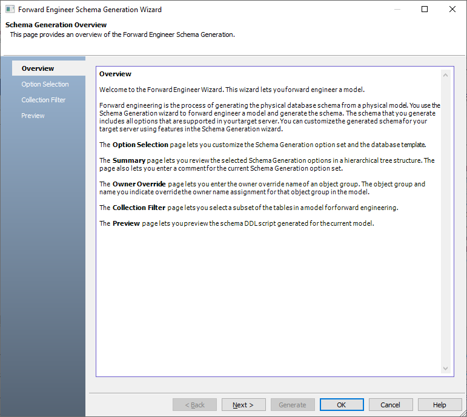
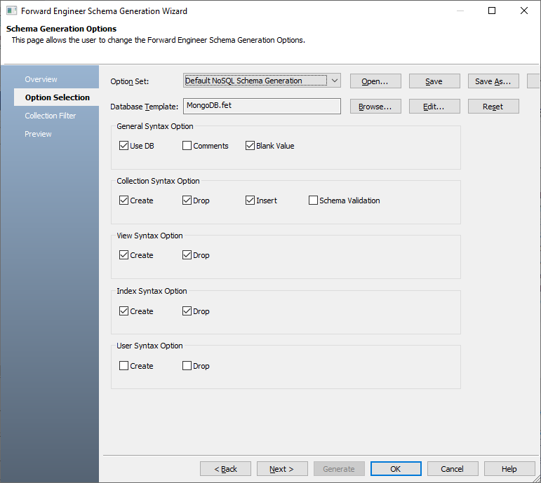
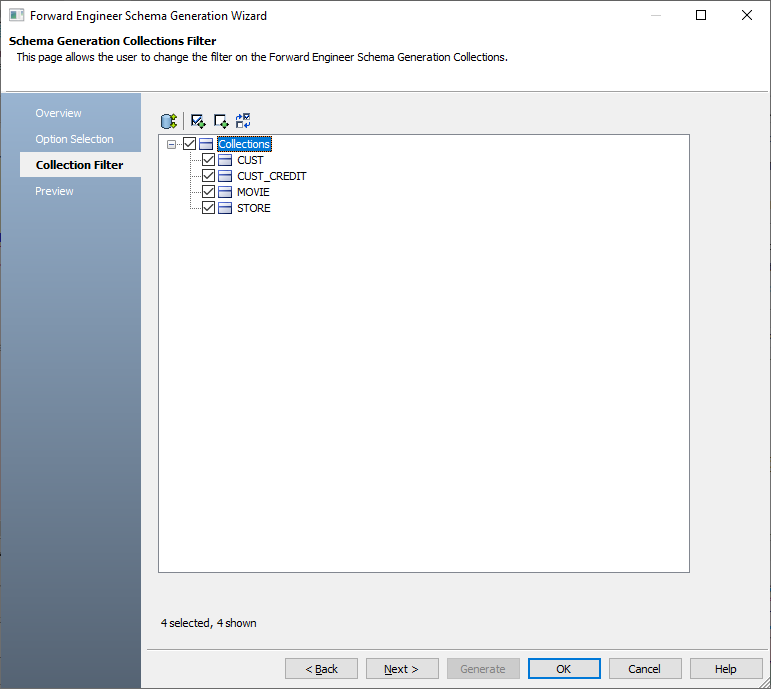
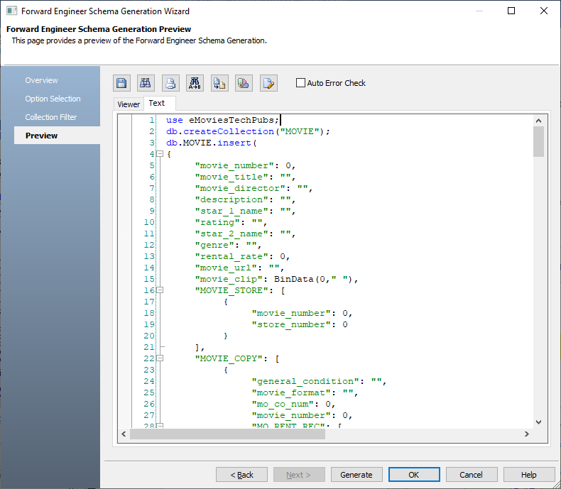
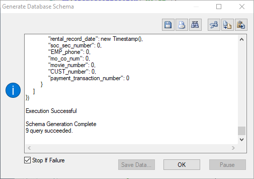

Open a MongoDB model in
Ensure that you are in the Physical mode.
Click Actions > Schema.
The Forward Engineer Schema Generation Wizard appears.

Click Option Selection.
The Option Selection tab displays the default option set. Select the schema generation syntax options as required.
Similarly, you can select schema generation options for available schema groups for other databases.

Click Next.
The Collection Filter tab appears. It displays a list of collections available in your model.
Similarly, you can filter Collections or Tables for other databases.

Select the collections that you want to forward engineer.
Click Preview to view the schema script.

Use the following options:
-
Auto Error Check: Select this option to enable auto error check by the forward engineering wizard.
-
Error Check (
 ): Use this option to run an error check. Based on the results, you can correct the generated script.
): Use this option to run an error check. Based on the results, you can correct the generated script. -
Text Options (
 ): Use this option to configure the preview text editor's look and feel, such as window, font, syntax color settings. For more information, refer to the Forward Engineering Wizard - Preview Editor topic.
): Use this option to configure the preview text editor's look and feel, such as window, font, syntax color settings. For more information, refer to the Forward Engineering Wizard - Preview Editor topic. -
Save (
 ): Use this option to save the generated script in the JSON or BSON format.
): Use this option to save the generated script in the JSON or BSON format.
Click Generate.
The forward engineering process starts. The script generates your physical database schema. You can access your database and verify the newly generated schema.
